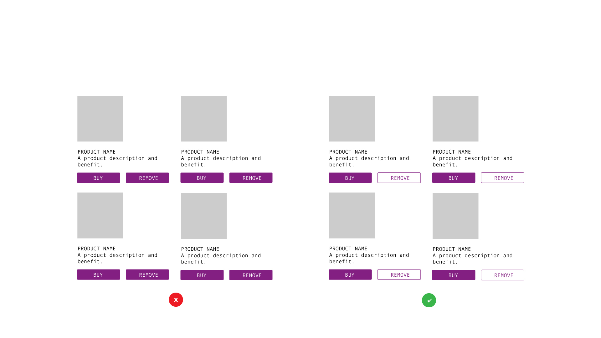
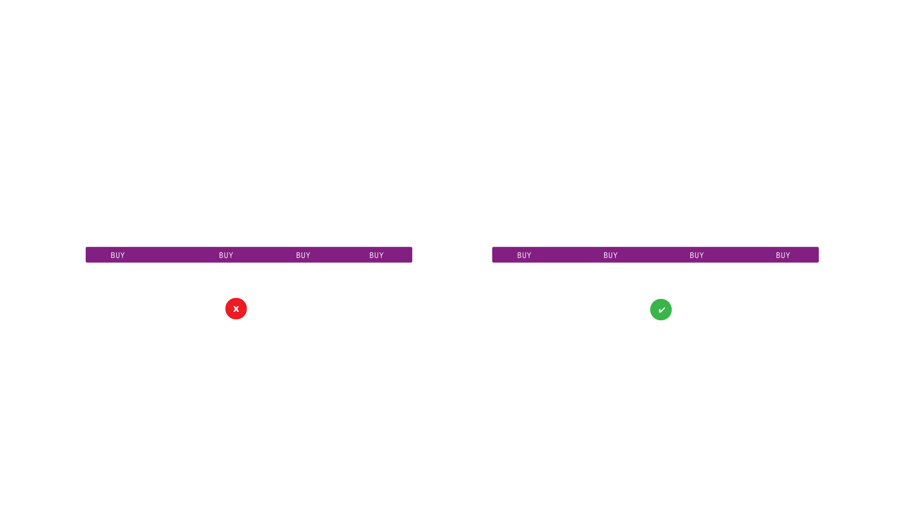
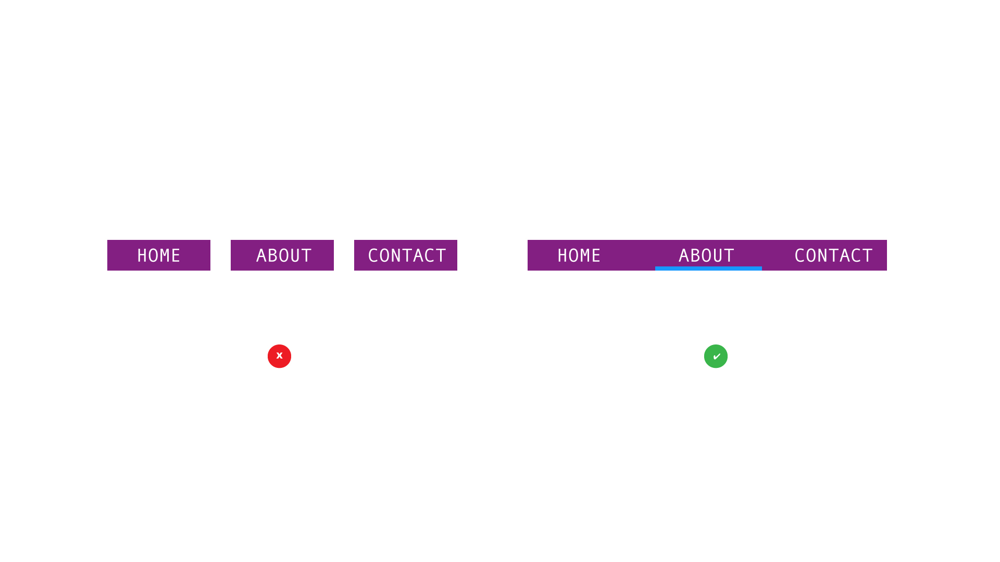
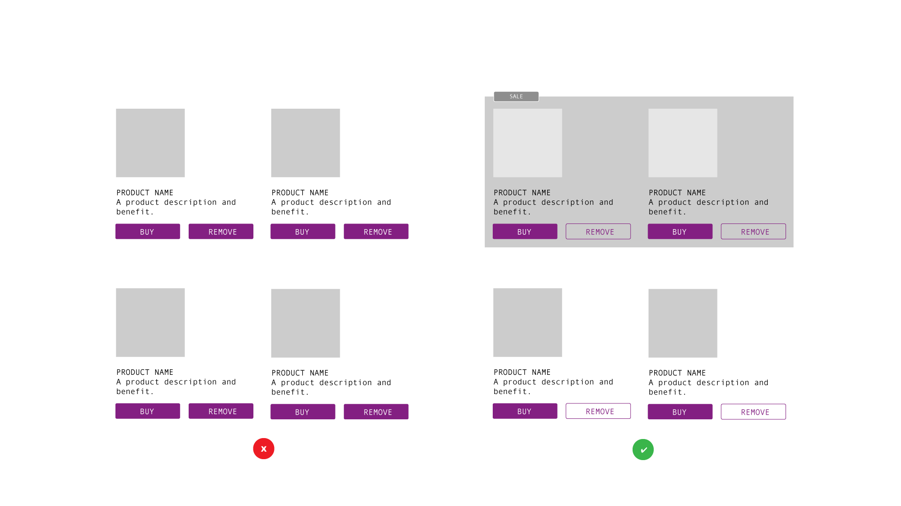
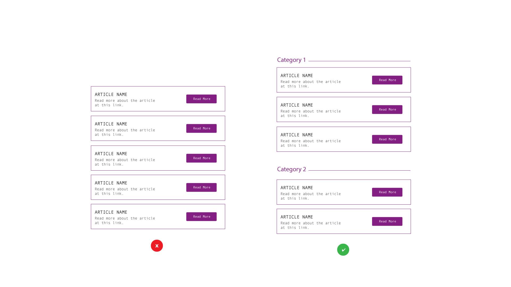

Beyond Pretty
Taking Design Beyond the Basics to Create Richer User Experiences
Created by Eileen Violini
Hello There
i'm eileen violini. i'm a designer and developer of user experiences and interfaces for wordpress websites and products. i'm the founder at sidetrack studio and the customer success advocate for castos and the seriously simple podcasting plugin.
My Stack
Intro
I like to say, design solves problems.
— Don Norman, The Design of Everyday Things
TL:DR
Good design gets out of the way
Hick's Law
hick's law states
The time it takes for a person to make a decision depends on the choices available.— OR —
As the number of choices increases, the time to make a decision also increases.
Execution
Limit choices, but dont use it when there are too many small chunks
— OR —
there are too many complex decisions.
Zeigarnik Effect
zeigarnik effect states
People remember uncompleted or interrupted tasks better than completed tasks.Execution
Use progress bars for complex tasks to visually indicate when a task is incomplete, and thus increase the likelihood it will be completed.Examples
Gestalt Principles
gestalt principles
Describe how humans typically see objects by grouping similar elements, recognizing patterns and simplifying complex images.Similarity
Symmetry
Proximity
Common Region
Peridoctiy
Serial Position Effect
serial position effect states
Users have a propensity to best remember the first and last items in a series.Examples
Include Cues in the User Interface
Maintain Task-relevant Information within the User Interface
Emphasize Key Information in the Beginning and End
Limit the Amount of Recall Required
Miller's Law
miller's law states
The average person can only keep 7 (plus or minus 2) items in their working memory.execution
Break down large bands of information into manageable bites.
for example
Soapbox
here's the rant
no matter your stack
Front End
Back End
Design
Development
we all have an obligation to make the best web possible.
Thank You
- Design Journal
- Github
iviolini ❘ beyond pretty
Because design is not about pretty pictures,
it's about solving problems.